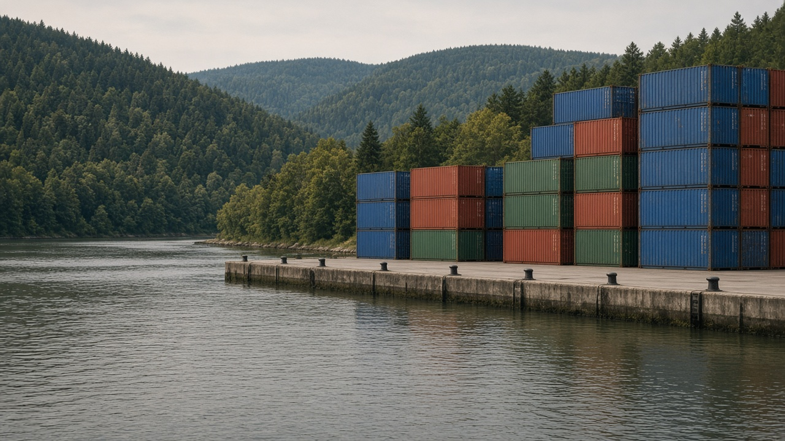
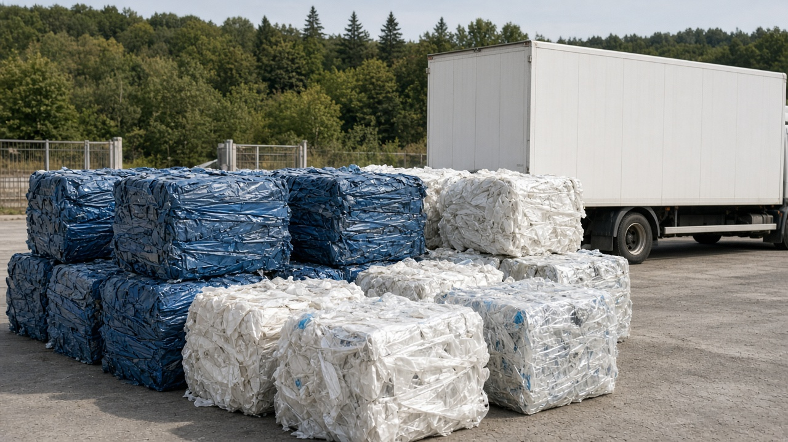

Trade, Environment, and Green Tariffs
Published on August 20, 2026

Trade rules and environmental policy meet when goods embody pollution, when process standards differ, and when countries fear that strict domestic rules will push production abroad. Green tariffs and border carbon adjustments levy a charge on imports according to their estimated greenhouse-gas or pollution content, aiming to level costs with domestic producers who already pay a carbon price. Eco-labels, sanitary rules, and bans on illegal timber or waste shipments are other trade-related tools. The legal tension is familiar: process-based measures can be painted as protectionism if they discriminate or lack a transparent scientific basis.
Developing exporters worry that complex carbon-intensity reporting will become a new non-tariff barrier, favoring firms that can hire auditors. Preferential access for cleaner goods, technical assistance, and recognition of equivalent domestic policies can reduce that risk. Conversely, cheap imports of plastic waste, used vehicles, and dirty intermediate goods can undo local standards unless customs and environment agencies cooperate at the border. Regional trade agreements increasingly include environment chapters, but their dispute tools are often weaker than the commercial chapters that sit beside them.
Policy design should separate genuine leakage control from industrial lobbying. A border adjustment that mirrors a transparent domestic carbon price, rebates exports consistently, and publishes methods is more defensible than a selective tariff aimed at rivals. South Asian trade in cement, steel, fertilizers, and garments will feel these rules first because those goods are both traded and carbon-intensive. Environment is now a trade fact: the question is whether rules reward real abatement or only paperwork that small exporters cannot afford.
व्यापार नियम र वातावरण नीति तब भेट्छन् जब वस्तुमा प्रदूषण अडिएको हुन्छ, प्रक्रिया मापदण्ड फरक हुन्छन् र देशहरू डराउँछन् कि कडा घरेलु नियमले उत्पादन विदेश धकेल्नेछ। हरित महसुल र सीमा कार्बन समायोजनले आयातमा अनुमानित हरितगृह ग्यास वा प्रदूषण अंशअनुसार शुल्क लगाउँछन्, ताकि पहिले नै कार्बन मूल्य तिर्ने स्वदेशी उत्पादकसँग लागत बराबर होस्। पर्यावरण चिह्न, स्वास्थ्य नियम र अवैध काठ वा फोहोर ढुवानी प्रतिबन्ध अन्य व्यापार-सम्बद्ध औजार हुन्। कानुनी तनाव परिचित छ: प्रक्रियामा आधारित उपायलाई भेदभाव वा पारदर्शी वैज्ञानिक आधार नभए संरक्षणवाद चित्रण गर्न सकिन्छ।
विकासशील निर्यातकर्ता चिन्ता गर्छन् जटिल कार्बन तीव्रता प्रतिवेदन नयाँ गैर-महसुल बाधा बन्नेछ, लेखा परीक्षक राख्न सक्ने फर्मलाई फाइदा हुनेछ। सफा वस्तुलाई तरजीही पहुँच, प्राविधिक सहायता र समकक्ष घरेलु नीतिको मान्यताले त्यो जोखिम घटाउन सक्छ। उल्टो सस्तो प्लास्टिक फोहोर, पुराना सवारी र फोहोर मध्यवर्ती वस्तु आयातले स्थानीय मापदण्ड बिगार्न सक्छन् जबसम्म भन्सार र वातावरण निकाय सीमामा सहकार्य गर्दैनन्। क्षेत्रीय व्यापार सम्झौतामा वातावरण अध्याय बढ्दै छन् तर विवाद औजार व्यापार अध्यायभन्दा प्रायः कमजोर हुन्छन्।
नीति रचनाले वास्तविक चुहावट नियन्त्रणलाई औद्योगिक दबाबबाट छुट्याउनुपर्छ। पारदर्शी घरेलु कार्बन मूल्य झल्काउने, निर्यात फिर्ता एकनास दिने र विधि प्रकाशित गर्ने सीमा समायोजन प्रतिद्वन्द्वीमा लक्षित छनोट महसुलभन्दा बढी रक्षायोग्य हुन्छ। दक्षिण एसियाली सिमेन्ट, फलाम, मल र तयारी पोसाक व्यापारले यी नियम पहिले महसुस गर्नेछ किनभने ती वस्तु व्यापार हुन्छन् र कार्बन-गहन छन्। वातावरण अब व्यापार तथ्य हो: प्रश्न यो हो कि नियमले वास्तविक कटौती पुरस्कृत गर्छन् कि साना निर्यातकर्ताले धान्न नसक्ने कागजी काम मात्र।

व्यापार नियम और पर्यावरण नीति तब मिलते हैं जब वस्तुओं में प्रदूषण समाया हो, प्रक्रिया मानक भिन्न हों और देश डरें कि कड़े घरेलू नियम उत्पादन विदेश धकेलेंगे। हरित शुल्क और सीमा कार्बन समायोजन आयात पर अनुमानित हरितगृह गैस या प्रदूषण अंश के अनुसार शुल्क लगाते हैं, ताकि पहले से कार्बन मूल्य चुकाने वाले घरेलू उत्पादकों से लागत बराबर हो। पर्यावरण चिह्न, स्वास्थ्य नियम और अवैध काष्ठ या कचरा ढुलाई प्रतिबंध अन्य व्यापार-संबद्ध उपकरण हैं। कानूनी तनाव जाना-पहचाना है: प्रक्रिया आधारित उपायों को भेदभाव या पारदर्शी वैज्ञानिक आधार न होने पर संरक्षणवाद चित्रित किया जा सकता है।
विकासशील निर्यातक चिंतित हैं कि जटिल कार्बन तीव्रता प्रतिवेदन नया गैर-शुल्क अवरोध बनेगा, लेखा परीक्षक रख सकने वाली फर्मों को लाभ होगा। स्वच्छ वस्तुओं को तरजीही पहुँच, तकनीकी सहायता और समकक्ष घरेलू नीति की मान्यता वह जोखिम घटा सकती है। उलटी सस्ती प्लास्टिक कचरा, पुराने वाहन और गंदी मध्यवर्ती वस्तु आयात स्थानीय मानक बिगाड़ सकती है जब तक सीमा शुल्क और पर्यावरण एजेंसियाँ सीमा पर सहयोग न करें। क्षेत्रीय व्यापार समझौतों में पर्यावरण अध्याय बढ़ रहे हैं पर विवाद उपकरण व्यापार अध्यायों से अक्सर कमज़ोर होते हैं।
नीति रचना को वास्तविक रिसाव नियंत्रण को औद्योगिक दबाव से अलग करना चाहिए। पारदर्शी घरेलू कार्बन मूल्य झलकाने वाला, निर्यात वापसी एकसमान देने वाला और विधियाँ प्रकाशित करने वाला सीमा समायोजन प्रतिद्वंद्वी पर लक्षित चुनिंदा शुल्क से अधिक रक्षणीय है। दक्षिण एशियाई सीमेंट, इस्पात, उर्वरक और परिधान व्यापार इन नियमों को पहले महसूस करेंगे क्योंकि वे वस्तुएँ व्यापार होती हैं और कार्बन-गहन हैं। पर्यावरण अब व्यापार तथ्य है: प्रश्न यह है कि नियम वास्तविक कटौती पुरस्कृत करते हैं या छोटे निर्यातक न उठा सकें ऐसा कागज़ी काम मात्र।